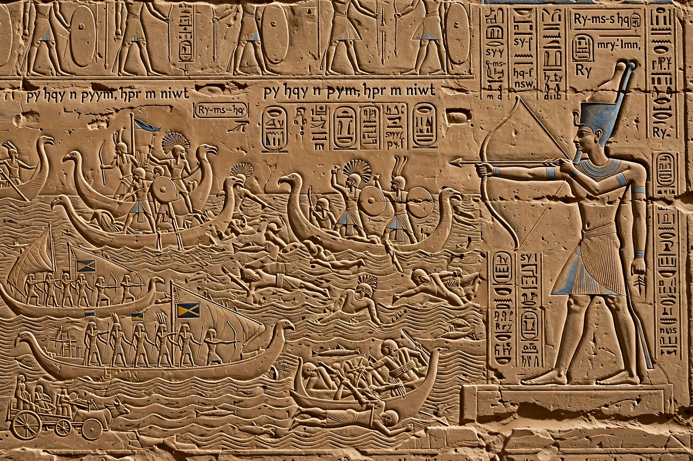

Ramesses III
From Wikipedia, the free encyclopedia
| Ramesses III | |
| Reign | c. 1186–1155 BC |
|---|---|
| Dynasty | 20th Dynasty |
| Predecessor | Setnakhte |
| Successor | Ramesses IV |
| Consort | Iset Ta-Hemjert; Tiye |
| Burial | Tomb KV11, Valley of the Kings |
| Monuments | Mortuary temple at Medinet Habu |

Reliefs at Medinet Habu record Ramesses III's wars against the Sea Peoples
Usermaatre Meryamun Ramesses III was the second pharaoh of the Twentieth Dynasty in ancient Egypt and is often regarded as the last great king of the New Kingdom. He reigned from about 1186 to 1155 BC and modelled himself on Ramesses II, defending Egypt against foreign invasions during the collapse of the Late Bronze Age.
Wars
Ramesses III's mortuary temple at Medinet Habu records three great defensive campaigns. In his fifth year he defeated a Libyan invasion from the west. In year 8 he confronted the Sea Peoples, a confederation whose movements destroyed other states of the eastern Mediterranean: the reliefs depict a famous naval battle at the mouths of the Nile — among the earliest depictions of a sea battle — alongside a land battle in Djahy (vengeance in southern Levant). A second Libyan war followed in year 11. Egypt survived, but lost its empire in Asia and grew poorer.
Domestic affairs
Ramesses was a prolific builder; the Great Harris Papyrus, compiled by his successor, catalogues his donations to temples across Egypt. His reign saw economic strain, however: in year 29 the tomb builders of Deir el-Medina staged history's first recorded strike over unpaid grain rations. The Turin Judicial Papyrus preserves the trial of conspirators in the "harem conspiracy", in which the queen Tiye plotted to place her son Pentawer on the throne. Modern CT scans of Ramesses III's mummy revealed a deep cut across his throat, suggesting the assassination succeeded even though the plot was tried as if he had lived to order it.
Death and legacy
Ramesses III died in about 1155 BC and was buried in tomb KV11 in the Valley of the Kings; his mummy was later moved by priests to the Deir el-Bahari cache (TT320) and is now in Cairo. His successors, all named Ramesses, presided over the decline of the New Kingdom.